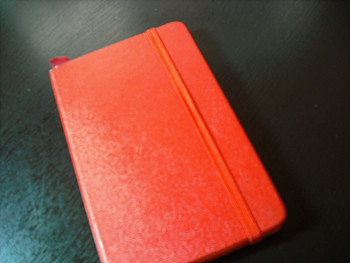
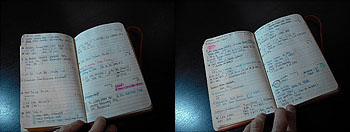
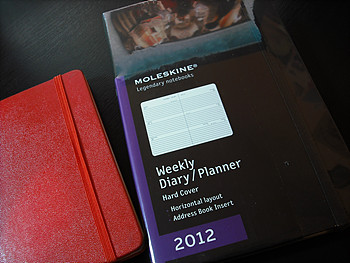
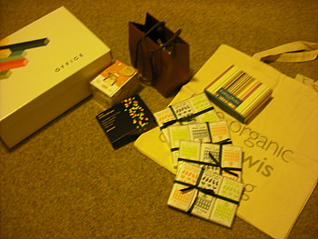
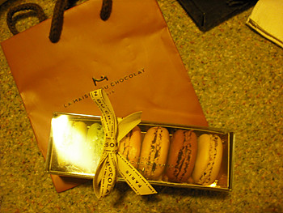
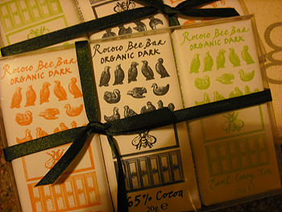
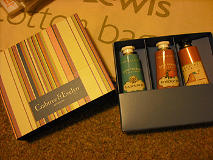
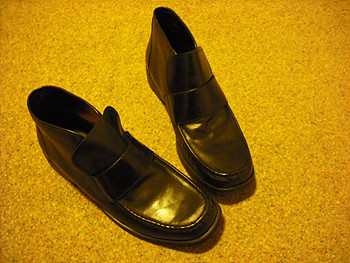

크리스마스 & 연말이다
보통 가게 일년수입중 절반정도가 이시즌에 들어온다는 소리를
어디서 들었는데 맞는말같아 ㅡㅡ;;
분위기에 휩쓸려 덩달아 열심히 지르고있음;;;


작년에 구입한 몰스킨 다이어리
원래 스케쥴러를 꾸준히 사용하는 타입이 아니라
살때 엄청 고민했는데
왠걸 일년동안 느므 잘썼다

그래서 올해는 큰사이즈로 구입
근데 저 종류는 왜 빨강커버가 없는겨 ㅜㅜ

일요일날 슬론스퀘어 피터존스 댕겨옴
회사라던가 아는사람들 선물사러 간게 목적이었는데
정신차려보니 부지런히 내걸 쟁이고있었...........OTL

피터존스 가기전에 구입한 La Maison du Chocolat 마카롱
오랜만에 마카롱 구입
집에와서 녹차랑 낼름 먹어버렸음;;;

Rococo 쪼코
패키지 디자인 넘 예쁘다 ;ㅂ;

Crabtree & Evelyn 핸드크림
매번 록시땅것만 이용했는데
저 3개들이가 ￡10 인걸보고 머시여 왜이리 싼겨!! 라고 외치며
충동구매^^;;;;

아무생각없이 office shoes 매장들어갔다가
충동구매한 신발
신발은 징짜(.........) 고만살려고했는데OTL
신발취향이 버클많이 달리고 복잡시려운걸 좋아하다보니까
신고벗을때 무진장 귀찮아서 편하게 신고벗을수있는거 하나 살까~
생각하던중 무난하다못해 심심한 디자인의 신발발견 +_+
가격이 50%이상 다운되어 있어서 망설임없이 겟
동네마실용(.......) + 데일리로 낙점!! ^^;;;;
(.........이렇게 점점 편한신발만 찾으면 안되는데.........OTL)
최근 너무추워서
아침에 정말 아슬아슬할때까지 침대에 누워있다가
출근해서^^;;; 매일매일 꼴이 말이아님;;;;
요 깜장알파카 코트 개인적으로 별로 좋아하지 않는데
-입으면 복부인의 포쓰가......OTL
추위에는 장사없음 ㅡㅡ;; 겨울 유니폼으로 낙점
토요일 크리스마스 마켓돌고
일요일 센트럴 매장돌고
아~(리스트에없는)신발 잘샀다~핸드크림 잘샀다~♬
요러고 집에 돌아와보니
정작 사야할거는 리스트에 반도 못채웠다는걸 깨달았다;;;;
화수목 로동후 또다시 센트럴을 배회하게 생겼군;;;
추워서 어디 돌아다니기가 겁난다;;
작년에는 좋다고 여기저기 싸돌아다녔는데 나이먹었나봐 ;ㅂ;
최근 어학연수라던가 학생들 귀국 시즌인지
한국 커뮤니티 사이트에 물건판매글이 엄청 올라오더라
매일 하이에나같이 뒤지면서 소설책을 쟁이고있음
(←아예 회사가는거 외에는 집에서 안나가겠다는 거냐;;;;)
며칠전에 권당 3파운드씩 존그리샴 / 파울로 코엘료 등 5권구입해서
기분업!! 겨울에는 침대서 귤까먹으믄서 책보는게 진리인게야 ^^;;;